速览
「游戏还是以前好」——这样想的人也许很多：以前的音乐更好记，现在的游戏曲子都记不住；现在都是续作，但也曾有新作争相涌现的时代；曾有游戏拼点子、提供各种惊喜的时代，硬件软件全都气势十足；游戏有谜、有幻想。如今靠 YouTube 和攻略 Wiki 信息马上扩散，但靠自己试错达成的冒险果然最棒。也有人对现代游戏感受不到魅力，干脆从游戏退休。于是老玩家常只谈老游戏、以老游戏为标准。但昔是昔，今是今：过去回不去，现在只存在于现在，从未来看这一刻也是只存在一次的过去——那么最大限度地享受现在最好。游戏的乐趣其实不是绝对的，而是相对的：时代自不必说，周围的环境、流行、技术程度都会改变感受到的乐趣。证据是现在去玩老游戏，大多敌不过现代游戏——老游戏当然有独有的魅力和点子，但综合乐趣和变化量，远不及洗练、规模变大的现代游戏。（不过，在理论尚未定型的老游戏里，某些游戏设计上的发现可能更多，这点先放一边。）每个人在最敏感的时期接触的作品，不限于游戏，都会深深留在记忆和感觉里，是那个人的重要作品。但因为别的比不上它就不去享受现代游戏，太可惜了，不妨多去尝试。何况现在也常能以某种形式玩到老游戏，很难得。只做喜欢的事也可以，但为了更享受现在，积极去做想做的事、挑战新东西吧。
1. 「以前的游戏更好」 0:02
认为游戏以前更好的人也许很多：
- 以前的游戏音乐更好记，现在的曲子都记不住。
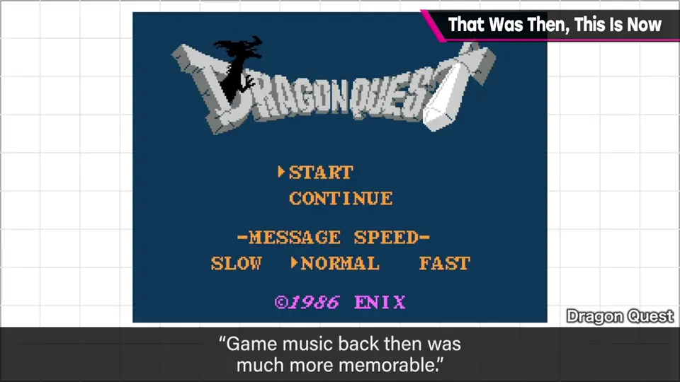
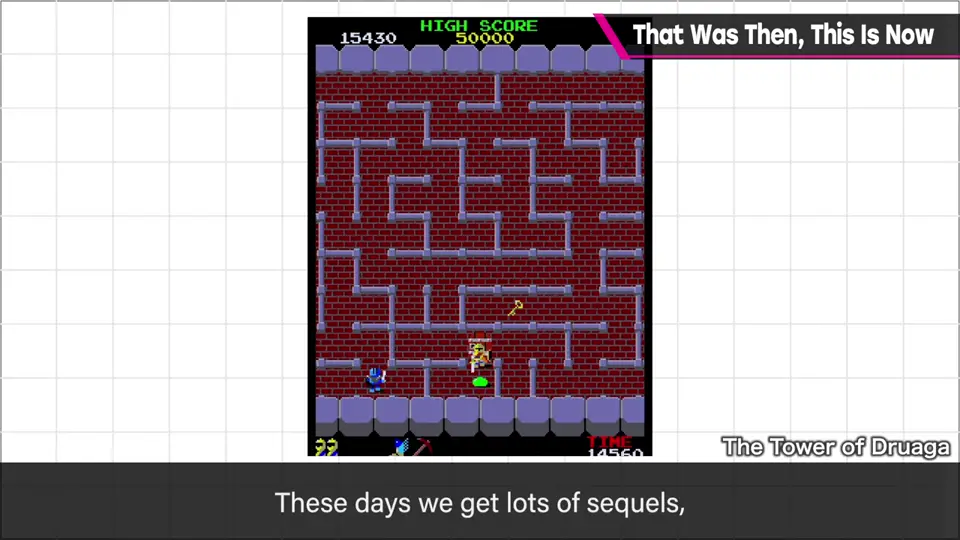
- 现在都是续作，但也有新作争相出现的时代。
- 游戏拼点子、提供各种惊喜；硬件软件全都有气势。
- 游戏有谜，也有幻想。
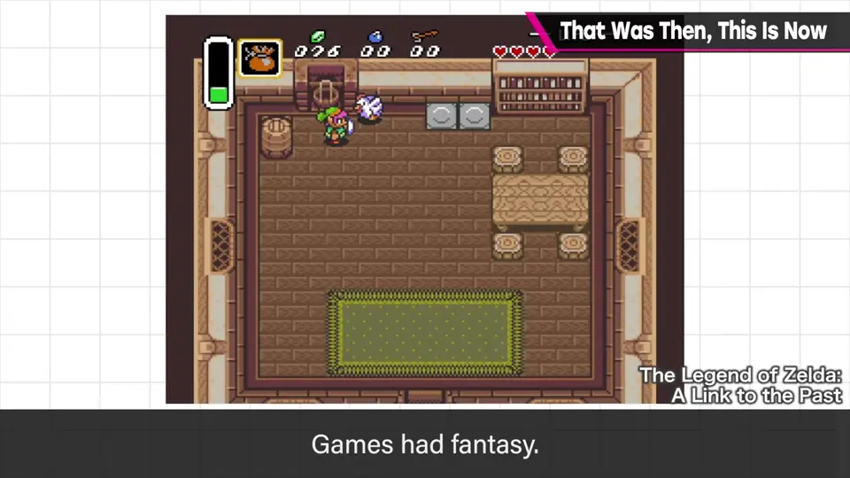
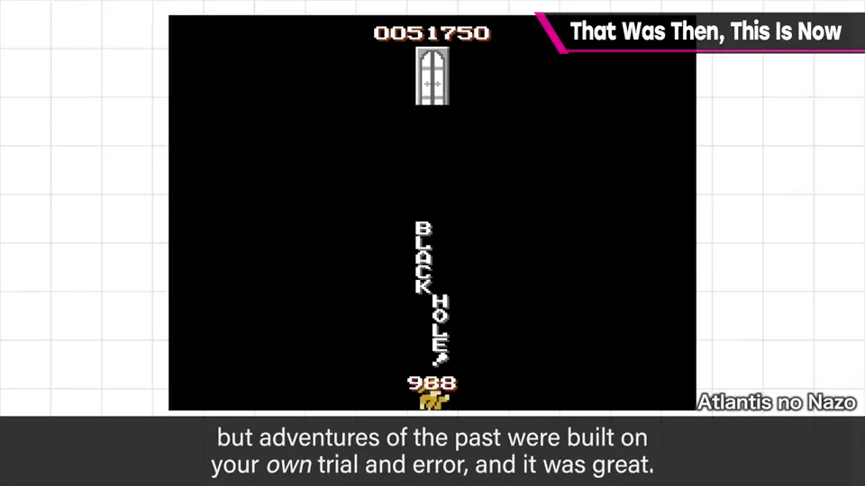
现在 YouTube 和攻略 Wiki 让信息马上扩散，但靠自己试错完成的冒险果然最棒。
也有人对现代游戏没感觉，从游戏本身退休、离开了。
2. 昔是昔，今是今 1:02
所以老玩家常只谈老游戏、以老游戏为标准。
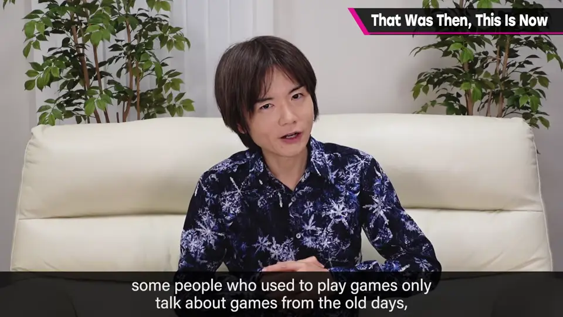
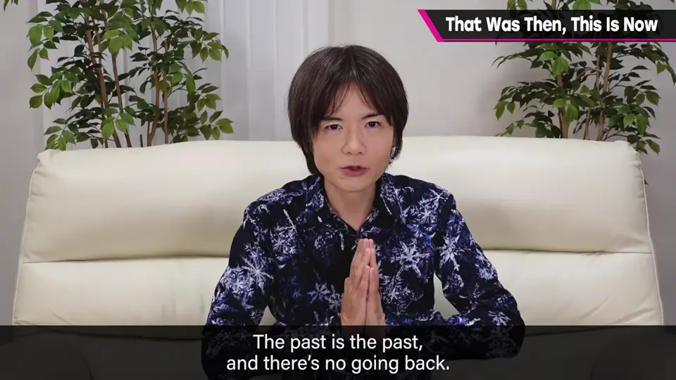
3. 乐趣是相对的 1:30
游戏的乐趣并非绝对，而是相对的。时代之外，周围的环境、流行、技术程度都会改变你感受到的乐趣。
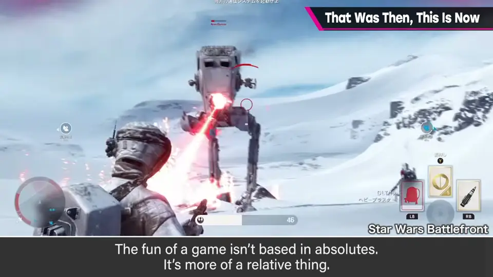
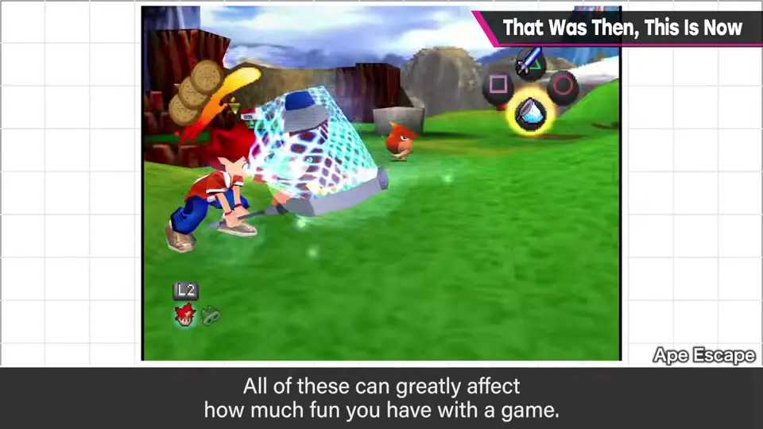
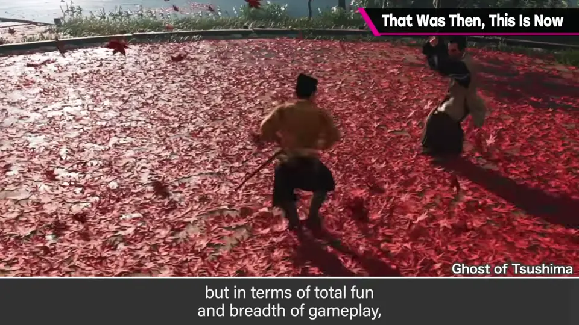
证据是：现在玩老游戏，多半比不过现代游戏。老游戏当然有独有的魅力和点子，但论综合乐趣和变化的丰富度，远不及洗练、规模变大的现代游戏。
不过，理论还没定型的老游戏中，游戏设计上的发现也许更多——这点先放一边。
4. 多感时期的作品 2:24
每个人在最敏感的时期接触的作品，不限于游戏，都会深深留在记忆与感觉中，是那个人的重要作品。
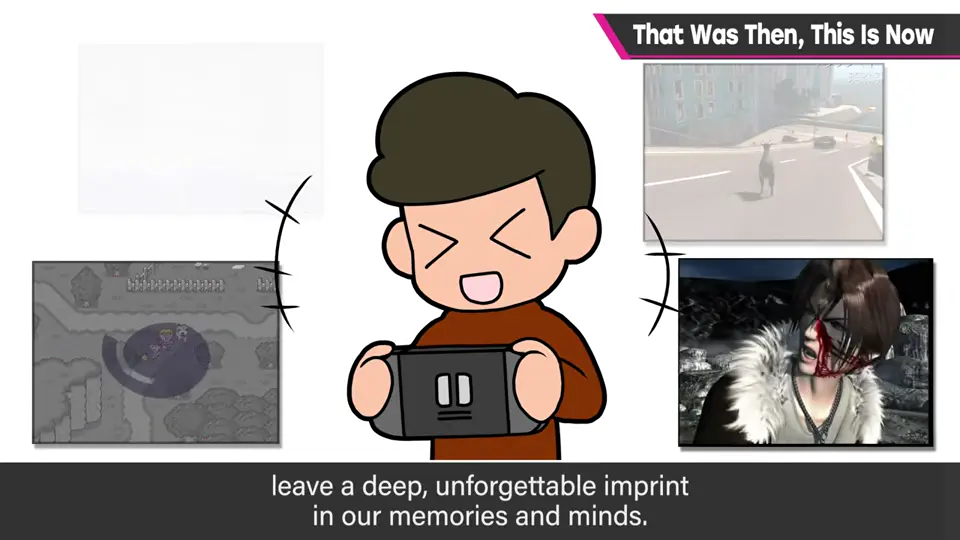
5. 享受现在 2:50
何况现在常能以某种方式玩到老游戏，很难得。
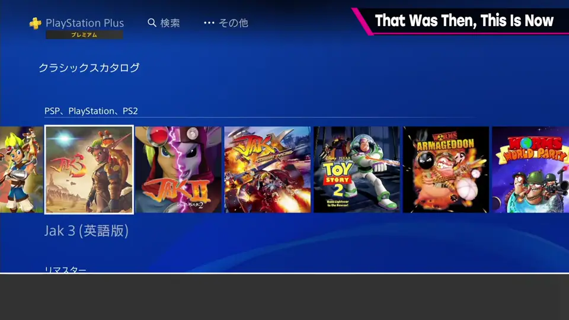
只做喜欢的事也可以，但为了更好地享受现在，积极去做想做的事、挑战新东西吧。
自测题
1. 樱井说游戏的乐趣是绝对的还是相对的？受哪些因素影响？
相对的；受时代、周围环境、流行、技术程度影响。 1:30
2. 老游戏在哪方面可能比现代游戏更有价值？
理论尚未定型，可能有更多游戏设计上的发现。 2:10
3. 对「多感时期接触的作品」，樱井的建议是？
它们很重要，但别因此不去享受现代游戏，积极尝试新东西。 2:40